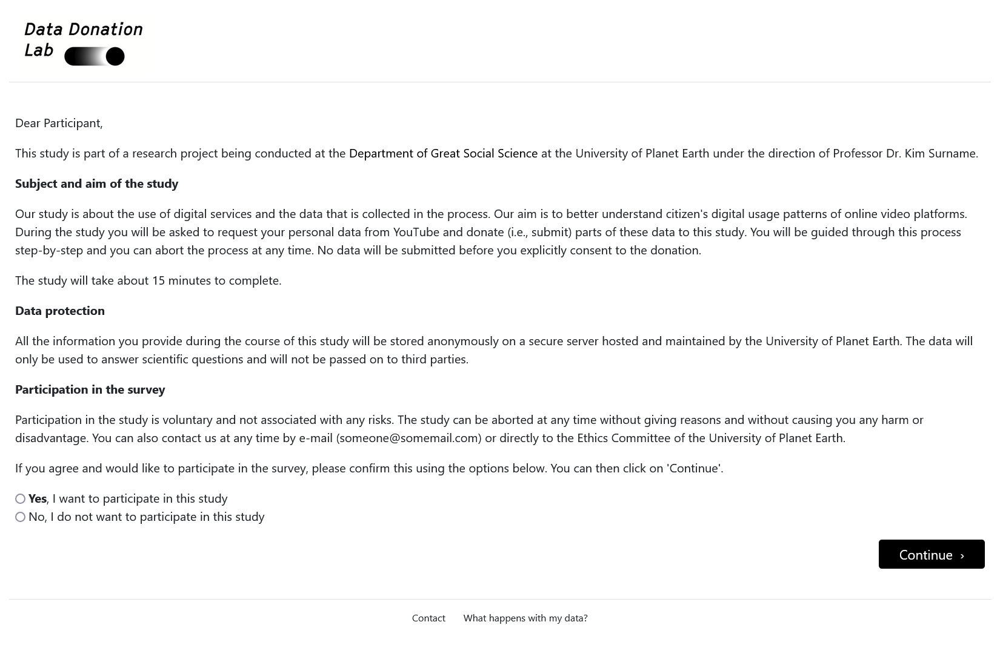
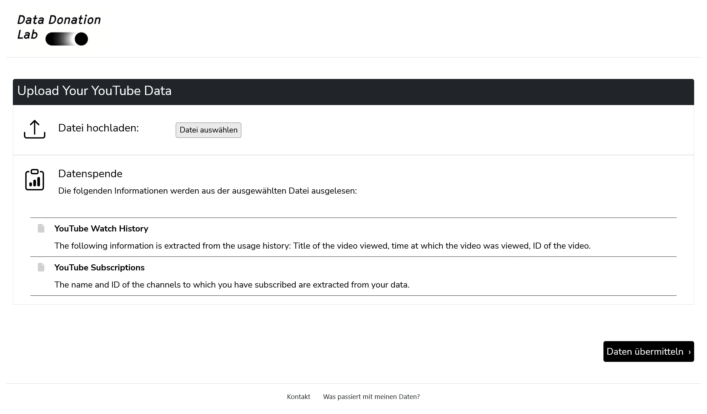
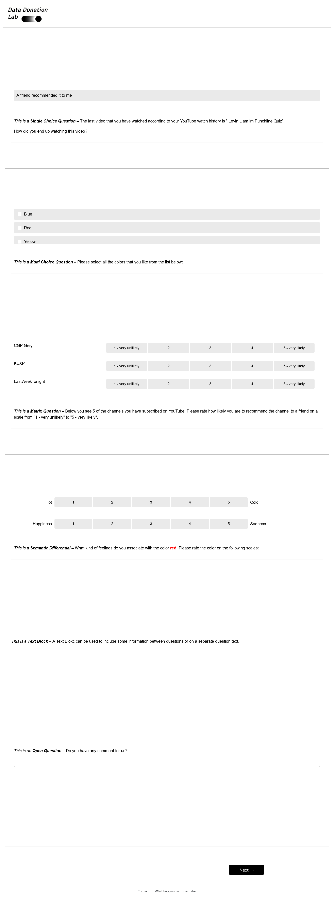

Documentation for Researchers
This part of the documentation is targeted at researchers who want to set up a data donation project using DDM.
Overview
DDM consists of an Admin Interface and a Participation Interface.
Admin Interface
Through the Admin Interface, researchers can create and manage data donation projects. It essentially provides a website to adjust the settings of the project in general as well as the settings affecting the Participation Interface. To give a first impression of how the Admin Interface looks, you see below a screenshot of the Project Hub, the main page through which you can configure a project:
Participation Interface
The Participation Interface is directed at participants. It includes the pages that participants of a data donation study will see when taking part in a data donation project. The participation interface usually consists of four steps:
-
A briefing page,
-
the data donation page,
-
a questionnaire, and
-
a debriefing page.
Below, these steps are displayed as they will look to the participants.

Figure 2. Briefing
|

Figure 3. Data Donation
|

Figure 4. Questionnaire
|

Figure 5. Debriefing
|
The following section will take you through creating and monitoring a data donation project as well as accessing the collected data.